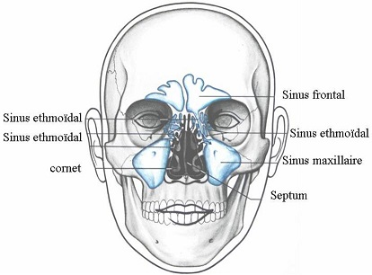

Les sinusites
Definitions
La sinusite
La sinusite est l'inflammation des sinus.
Les sinus
Les sinus sont des cavites creusees dans certains ose de la face qui sont annexees aux fosses nasales, il y a quatre types de sinus: sinus frontal, sinus maxillaire (de chaque cete), sinus ethmoedale (entre les yeux), sinus sphenoedal (creux du crene).

La sinusite aigee
La sinusite aigue est leinflammation aigue de la muqueuse sinusienne.
Elle seobserve au cours deune rhinite aigue, deune grippe, apres un bain.
Signes cliniques
Douleurs brutales unilaterale de la face, periorbitaire, pulsatile.
Mouchage purulent.
Alteration de l'etat general.
Fievre.
Traitements
Antibiotique.
Corticotherapie en courte cure : aerosol, vasoconstricteur.
Ponction evacuatrice en cas de sinusite bloquee.
La sinusite chronique
La sinusite chronique est leinflammation chronique de la muqueuse sinusienne avec principalement une atteinte du sinus maxillaire.
Signes cliniques
Douleurs rares, parfois douleur frontale.
Mouchage purulent.
Obstruction nasale.
Rhinoscopie : muqueuse inflammatoire et presence de pus dans le meat moyen.
Traitements
Antibiotique.
Corticotherapie.
Lavage de sinus.
Chirurgie endo-nasal.
Complications des sinusites
Au niveau ophtalmologique :
Cecite.
Paralysie oculo-motrice.
Abces orbitaire.
Cellulite orbitaire : eil gonfle.
Au niveau meningo-encephalique :
Meningite.
Abces du cerveau.
Thrombophlebite du sinus caverneux.
Voir aussi :
Module Otho-rhino-laryngologie : ORL